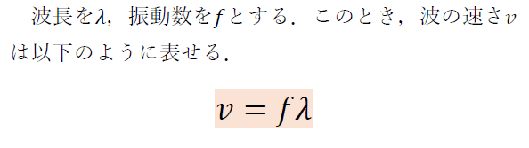
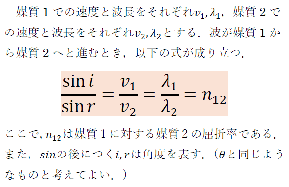
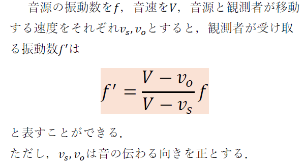
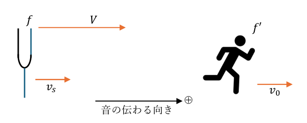
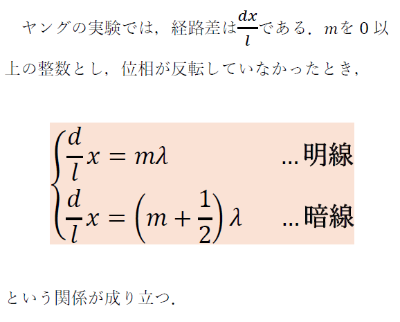
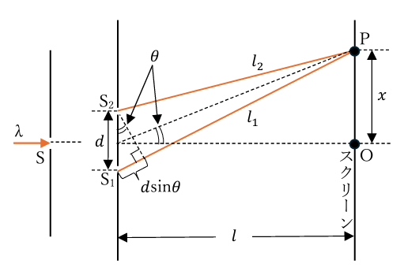

波
波と媒質の運動
波(波動)とは，振動が次々と周囲に伝わる現象を指す．また，振動を伝える物質を媒質と呼ぶ．
「波」と聞くと，海を思い浮かべるかもしれない．しかし，高校物理ではもっと広い意味で波を学習する．例えば，音や電波は波の一種である．
音を例にしてもう少し具体的に説明する．音の場合，空気を振動させることで発生させることができる．このことから音の媒質は空気であることが分かる．
波の基本公式を以下に示す．ここで波長とは波1つ分の長さであり，振幅数は媒質が1秒あたりに振動する回数である．

屈折の法則
中学では反射の法則を学習した．反射の法則では入射角と反射角が同じ角度になるという性質があった．
しかしながら，高校で習う屈折の法則では，入射角と屈折角は同じ角度にならないという特徴がある．
そもそも屈折とは何かというと，波が異なる媒質を通るときに進行方向が変わる現象のことである．媒質によって波の速度は変わるために屈折という現象が発生する．
屈折の法則の公式を以下に示す．

ドップラー効果
ドップラー効果とは，発生源(音源)あるいは観測者が移動することにより，観測される周波数が変化する現象である．
ドップラー効果を最も身近に感じられるのは，救急車のサイレンであろう．救急車が観測者を通り過ぎた瞬間，サイレンの音が低くなるように感じるのはドップラー効果の影響である．
以下にドップラー効果の公式を示す．公式のみでは分かりづらい部分もあるためその下に簡易的な図も用意した．余談だが，図の中にある，さすまたのような音源は「おんさ」であり，高校物理では頻繁に登場する．
 
光の干渉
光は波の一種であり，高校物理では頻繁に登場する．(厳密にいえば，光は波と粒子両方の性質を持つとされている)
光の干渉では，光が波の性質を持っていることを利用している．波の性質を持つため，ある2つの経路の光の経路差(光路差)が波長の整数倍で表せたときに，干渉して光を強めあう(明線が出現する)性質を持つ．
光の干渉を実験したものとして，有名なものにヤングの実験がある．
ヤングの実験について公式を以下に示す．公式のみでは分かりにくいため，その下に図も掲載する．
 